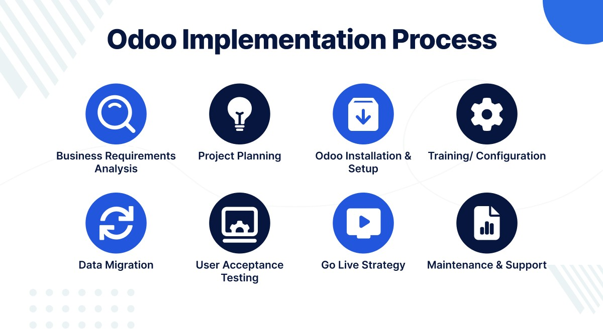

Odoo Implementation in Pakistan – Affordable ERP for Every Business
In today's rapidly evolving business landscape, companies in Pakistan—from small startups to large-scale enterprises—are increasingly turning to integrated solutions that streamline operations and improve efficiency. One of the most versatile and affordable ERP systems available today is Odoo. At ERP Training Pakistan, we specialize in Odoo Implementation in Pakistan, offering expert guidance and support through experienced implementers with both local and international project experience, including in Dubai, Qatar, and Saudi Arabia.
Whether you're looking for onsite or remote implementation, our team of expert consultants is here to provide end-to-end Odoo ERP services tailored to your industry needs and business scale.
Why Choose Odoo?
Odoo is a powerful open-source ERP system that offers a complete suite of business applications covering all company needs such as:
- Accounting
- CRM (Customer Relationship Management)
- Sales & Purchase
- Inventory & Warehouse
- Human Resources (HRM)
- Project Management
- E-Commerce
- Point of Sale (POS)
- Manufacturing
- Marketing Automation
- and more...
Unlike traditional ERP systems, Odoo offers modular flexibility, allowing businesses to start small and scale up as they grow. This makes it the perfect ERP solution for both small businesses and large-scale industries.
Odoo Implementation in Pakistan – Our Services
At ERP Training Pakistan, we deliver affordable ERP for all through professional Odoo implementation services in Pakistan. Our services include:
- Business Process Analysis
We understand your business goals and analyze your workflows to determine how Odoo can best be configured for optimal performance.
- Odoo Configuration & Customization
We configure Odoo apps based on your business requirements and can also develop custom modules for unique processes.
- Data Migration
Seamlessly move your data from legacy systems or spreadsheets into Odoo with no data loss.
- User Training & Support
Your team will receive full training to use Odoo efficiently, along with post-implementation support to ensure smooth operations.
- Remote and Onsite Implementation
We provide flexible options, including onsite deployment in major cities across Pakistan, as well as remote implementation services for businesses in any location.
Expert Consultants with Global Experience
Our consultants have successfully implemented Odoo in multiple regions including Pakistan, UAE (Dubai), Qatar, and Saudi Arabia. Their hands-on experience in diverse industries ensures that your business gets the best possible solution. From manufacturing and retail to healthcare and logistics, we know what it takes to deliver an ERP that works.
Benefits of Odoo ERP
Implementing Odoo can revolutionize your business operations. Here are some of the key benefits:
- Cost-Effective Solution
Odoo provides an enterprise-level ERP system at a fraction of the cost of traditional ERPs like SAP or Oracle. With affordable implementation services in Pakistan, even small businesses can go digital.
- Modular and Scalable
You can implement only the modules you need and add more as your business grows, making Odoo ideal for all business sizes.
- User-Friendly Interface
Odoo has a modern, intuitive interface that requires minimal training. Your team can start using it efficiently from day one.
- All-in-One Platform
Manage everything from accounting and inventory to HR and CRM in one place without relying on third-party apps.
- Customizable and Open Source
Being open-source, Odoo allows full customization to meet your exact business needs.
- Integrated Business Intelligence
Make informed decisions with real-time dashboards and advanced reporting features.
- Mobile-Friendly
Access your business data anytime, anywhere through Odoo's mobile-friendly interface.
Odoo ERP for All Industry Types
Odoo is designed to cater to a wide range of industries. Whether you are in services, manufacturing, or trade, there's a tailored solution waiting for you.
- Retail & E-Commerce
Manage your storefronts and online shops with powerful POS, inventory, and eCommerce modules.
- Manufacturing
Use the MRP (Manufacturing Resource Planning) module for full control over production, work orders, BOMs, and routing.
- Trading & Distribution
Streamline your supply chain, automate purchase orders, and manage multiple warehouses effortlessly.
- Healthcare
Manage appointments, billing, medical records, and more in a centralized system.
- Construction & Real Estate
Control budgets, project milestones, and procurement with powerful project and accounting tools.
- Education
Track students, staff, admissions, and course management all in one place.
- Food & Beverage
Use Odoo to handle recipe costing, batch production, and quality control efficiently.
- Logistics & Transport
Manage your fleet, shipment tracking, warehouse locations, and real-time inventory visibility.
- Professional Services
From law firms to consulting agencies, track time, manage projects, invoices, and retainers efficiently.
Why ERP Training Pakistan?
We're more than just implementers—we're your strategic ERP partner. Here's what sets us apart:
- Experienced Implementers with dozens of successful projects
- In-depth knowledge of local business regulations and compliance
- Presence in Pakistan, Dubai, Qatar, and Saudi Arabia
- Full range of services: from consultation to deployment and post-implementation support
- Affordable pricing and packages tailored to SMEs and large organizations
- Live demos and pilot testing before going live
- Bilingual support (English and Urdu)
Let's Build a Smart Business Together
Whether you're running a growing startup or an established enterprise, ERP Training Pakistan offers you a smart, scalable, and cost-effective solution with Odoo Implementation in Pakistan. Take control of your business processes, improve customer satisfaction, and make data-driven decisions with confidence.
Our expert consultants are just a call away to help you evaluate your ERP needs and deliver an Odoo solution tailored to your business.